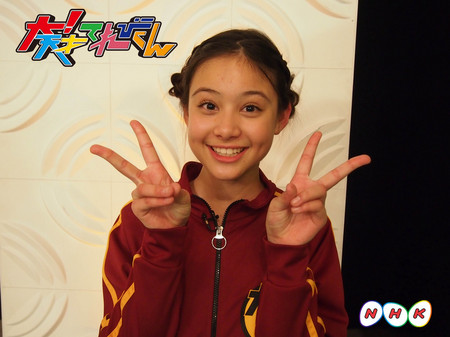
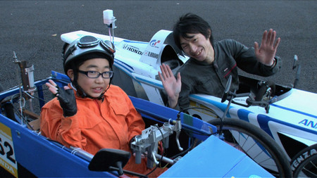
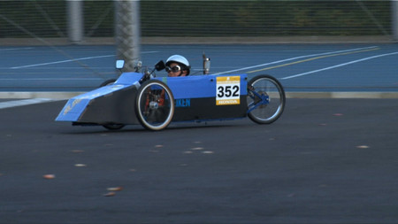
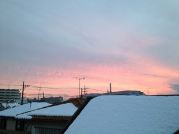
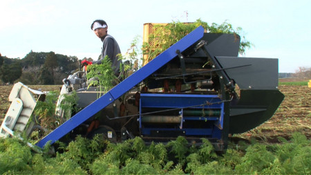
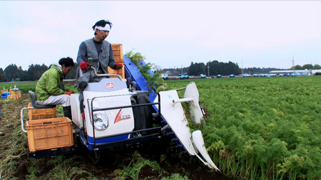
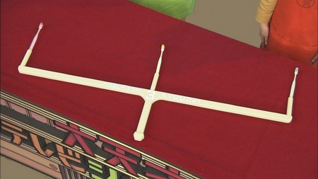
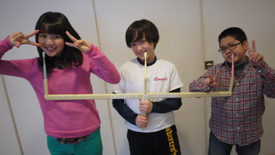
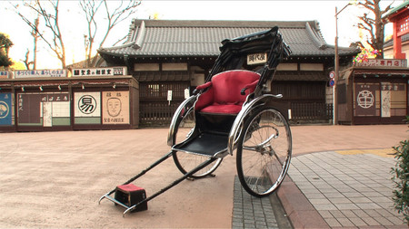
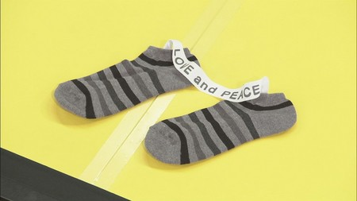

<<2012年12月 | トップページ | 2013年2月>>
2013年1月
祝！「大！木曜LIVE」ご参加１００万人突破！
祝！「大！木曜LIVE」ご参加１００万人突破！
生放送にご参加頂いたみなさんの人数を数える「ご参加カウンター」。
去年４月からの参加人数を数えてきました。
出川特命Ｐは「絶対１００万人なんて無理だってー」と決めつけていましたが、本日めでたく！１００万人超えを達成しました！
これもひとえに視聴者のみなさまのおかげです。本当にありがとうございました。
こんなおめでたい日にもかかわらず、われらが出川特命Ｐは、インフルエンザでお休みのため、記念すべき瞬間に立ち会えない始末。実に残念です。
生放送の出番だけでなく記念すべき日の喜びも、隣のスタジオに“たまたま”来ていたチャンカワイさんに奪われてしまいました。
うかうかしていると、特命プロデューサーの座も奪われてしまうかも知れません。
「大！木曜LIVE」では、みなさんに楽しんでもらうべく、様々な企画を検討しています。
次回以降もぜひ、ふるってご参加ください。
大天才テレビジョンはあなたを待っています！
投稿者:大天才テレビジョン社員１号 | 投稿時間:22時00分 | カテゴリ：お知らせ！ | 固定リンク


 " title="ソーシャルブックマークについて">
" title="ソーシャルブックマークについて">
※NHKサイトを離れます。
【私のお正月】竹原司
今年のお正月は、いとこが２人とも受験だったので、
おじいちゃんの家に行って、いとこ無しのお正月でした！！
大晦日は、年越しそばを食べたあとすぐねちゃいました！
１月１日・・・「今年がおわってもう来年か〜」と思いました
「ってもう今年か〜」って思いました（笑）
おせちとおぞうに、いっぱい食べました！
おなかいっぱいになって、楽しいお正月でした！！！
投稿者:竹原司 | 投稿時間:18時00分 | カテゴリ：We are 大天才テレビジョン | 固定リンク
" title="ソーシャルブックマークについて">
※NHKサイトを離れます。
【人の話を聞け】辻口流バレンタインスイーツを作ってみた！
こんにちは〜（＾□＾）ニイナです！
今日放送された「人の話を聞け」見て頂けたでしょうか？今回は「辻口博啓さん」でした！
私もお菓子作りが大好きなので、とても興味深かったです☆
特に辻口シェフが教えてくださった「バレンタインフルーツパラダイス」！！
とっっっても気になりました！
という事で、実際にニイナが作ってみました〜♪
では、さっそく作ってみたいと思いま〜す！
材料はコチラでーす！ジャン！！
生クリーム、チョコレート、バター、そしてお好みのフルーツ、これだけです！
とっても簡単ですよ〜（ ＞▽＜）
今回、フルーツには、私が好きなパイナップル！
そして今が旬のイチゴ！さらにチョコにはぴったりのバナナを用意しました！
ではまずその１！
１ 生クリームを鍋に入れ、沸騰する直前まで温める
生クリームはこげやすいので、火に気をつけて温めました〜！！
そしてその２！！
２ 溶かしておいたチョコレートに１を入れ、混ぜ合わせる。
その３！！
２に溶かしたバターを入れ、混ぜ合わせる。
こんな感じに〜☆
どうですか〜？？
そして、あとは陶器に流しいれ、一晩冷蔵庫で冷やすだけ！
本当にラクチンで〜す！
あっ！でもココ、注意しないとチョコレートがたれてしまうので、ゆっくりと慎重に流しいれるのがポイントです！
これで一晩くらい待ちま〜す！
私は朝に作ったので夜頃にはできました！
あとはこれにフルーツをのせるだけ！
☆レシピのまとめ☆
バレンタインフルーツパラダイス
【材料】 100ccのココット皿で約4人分
スイートチョコレート 130ｇ
生クリーム（３５％） 100ｇ
バター 20ｇ
フルーツ 適量
【作り方】
１ 生クリームを鍋に入れ、混ぜながら沸騰直前まで沸かす。
２ 溶かしておいたチョコレートに１を入れ、混ぜ合わせる。
３ ２に室温でやわらかくしたバターを入れ、混ぜ合わせる。
４ きれいに混ざったら、陶器に流し入れ、一晩冷蔵庫で冷やし、固める。
５ チョコが固まったらイチゴやバナナなど、好みのフルーツを盛り付ける。
※作ったバレンタインフルーツパラダイスはニイナがおいしくいただきました。
投稿者:大天才テレビジョン社員３号 | 投稿時間:18時50分 | カテゴリ：お知らせ！ | 固定リンク
" title="ソーシャルブックマークについて">
※NHKサイトを離れます。
【私のお正月】長谷川ニイナ
こんにちは〜 ニイナです！！
皆さん、お正月はいかがでしたか！？
私の今年のお正月はといいますと・・・。
えーっと、特にお正月らしい事は、あまりやっていません。
それに、自分でもよく分からないのですが、
何故か元旦からバドミントンをしていました！！
すっごく楽しかったです♪
こういうのもアリだなぁ〜と思ったニイナでした☆
あっ、そうそう！！
お雑煮って地域によってちがうんですよね〜！
皆さんは、どんなお雑煮を食べましたか？

投稿者:長谷川ニイナ | 投稿時間:18時00分 | カテゴリ：We are 大天才テレビジョン | 固定リンク
" title="ソーシャルブックマークについて">
※NHKサイトを離れます。
【私のお正月】黒澤美澪奈
こんにちは(o^∀^o)
みれなで〜す!!
私は、元旦におじいちゃんとおばあちゃんの家に、
新年のあいさつに行きました！
毎年、お正月一番最初に、家族で“おとそ”をいただきます。
家族みんなで“さかずき”を順番にまわして、
今年も元気に過ごせますように！と願っていただきます。
でも、味が薬っぽいので、美澪奈はちょっと苦手です。
なので毎年、さかずきに口をつけるだけにしています(-ω-)
そして、その後に、おせちを食べました！
おばあちゃんが、テーブルいっぱいのごちそうを用意してくれました！
実は、私、お刺身が苦手なんです。
おばあちゃんは、そんな美澪奈のために、
私の大好物ばかりのお料理も用意してくれました！
とっても、おいしかったです！
お腹がいっぱいになったら、みんなで初詣に行きました！
地元の、毎年同じところに行きます。
元旦なのでお参りするのに並ぶけど、並んでる間も楽しいです。
おじいちゃんは、毎年、ランドセルに付けるお守りを買ってくれます。
そして初詣といえば、おみくじですよね〜(^○^)
これも、毎年の恒例です
今年の運勢は…
ななななんと！
大吉がでたんです！
ウルトラスーパーマックスに
嬉しかったです(^-^)v
今年もたくさん良いことがあるといいな〜
そのために、
なにごとにも全力投球で頑張ります＼(^o^)／
投稿者:黒澤美澪奈 | 投稿時間:18時00分 | カテゴリ：We are 大天才テレビジョン | 固定リンク
" title="ソーシャルブックマークについて">
※NHKサイトを離れます。
【ドウブツカメラ！】「おめでたいツルを撮る」（撮影：寿々歌・金子）
１月２８日（月）「おめでたいツルを撮る」
今回の動物カメラマンは、鎮西寿々歌と金子隼也。
２人が撮ったベストショットはこちら！
※画像をクリックすると大きな画像が開きます。
また、開いた画像を右クリックすると保存ができます。
撮影：金子隼也 『明日へ』
撮影：鎮西寿々歌 『華麗に舞うラブラブ夫婦』
ロケ中のオフショットはこちら！
投稿者:大天才テレビジョン社員１号 | 投稿時間:18時46分 | カテゴリ：ドウブツカメラ！ | 固定リンク
" title="ソーシャルブックマークについて">
※NHKサイトを離れます。
【私のお正月】延命杏咲実
おせちりょう理の中では「くりきんとん」が大すきな延命です！
さて、今年は３年生なので、
冬休みの宿題にはじめて書きぞめが出ました！
お母さんは習字がとくいなので、
はね、はらいなどのポイントを細かく教えてもらいました。
お母さんのしどうを受けて、
きれいに書く事が出来ました！
うれしかったです☆
でも、体に力が入ってしまい、
なぜか、首がいたくなりました（笑）
４年生は、もっときれいに書けるようにがんばるぞ〜☆
投稿者:延命杏咲実 | 投稿時間:18時00分 | カテゴリ：We are 大天才テレビジョン | 固定リンク
" title="ソーシャルブックマークについて">
※NHKサイトを離れます。
【私のお正月】金子隼也
隼也です！
皆さんはどんなお正月でしたか？
僕は祖母のいる香川県に行っていました。
香川県は「さぬきうどん」が有名でたくさんのお店があるんです。
カーナビで設定すると画面には
うどん屋さんのマークだらけになったりするんですよ！
さすが「うどん県」!!
香川県のお雑煮は白味噌で丸いお餅…
なんと！なんと！
お餅の中には、あんこが入ってるんです。
えーってビックリするかもしれないけど、ぜんざいみたいな感じです。
お正月は讃岐うどんと餡もち雑煮をたくさん食べて、
高校サッカーやお笑い番組を見ました。
もちろん戻ってから関東のお雑煮も食べました！
あれ？食べてばっかり(笑)
食べた分、運動しなきゃ！
投稿者:金子隼也 | 投稿時間:18時00分 | カテゴリ：We are 大天才テレビジョン | 固定リンク
" title="ソーシャルブックマークについて">
※NHKサイトを離れます。
【私のお正月】島田太一
熱海に温泉旅行に行きました！！
温泉の前に、卓球場があって、
入って卓球をしてみたら、スッゴイ楽しかったんです。
その時が人生初卓球でした！！
でも、なぜ温泉には卓球なのか不思議に思います。
それで、帰りのとちゅうで、
熱海駅の前に足湯があったので入りました。
そこでまた、人生初足湯を体験しました。
足湯の床に、石がたくさんはってありました。
そこを歩くととても痛かったです。
人生初の体験をお正月にしました(´ω`#)
投稿者:島田太一 | 投稿時間:18時00分 | カテゴリ：We are 大天才テレビジョン | 固定リンク
" title="ソーシャルブックマークについて">
※NHKサイトを離れます。
【乗りすけFile】 No.58：エコランカー（1月23日放送）



全長：3m06cm
全高：65cm
全幅：1m05cm
重量：約80kg
定員：1名
価格：約20万円
地球に優しい究極の低燃費マシン「エコランカー」。
決められた量の燃料で、どれだけ長い距離を走れるかを競う競技専用車両。一般的なガソリン普通自動車の数百倍もの燃費効率を誇る。
車体は極限まで軽量化が図られている。フレームは軽くて丈夫なアルミ製。空気抵抗軽減のため車高も極めて低い。
車輪は三輪。幅4cmの極細専用タイヤで、転がり抵抗を最大限に抑えている。また、接地面が減るため地面との摩擦抵抗も軽減される。
アクセルは右手、ブレーキは左手で操作。足は使わず全ての操作を手で行う。
市販の50ccバイクのエンジンを使用しているが、軽量化と空気抵抗の軽減の結果、最高速度は約90km/hにも達する。
これまでの【乗りすけFile】はこちら
投稿者:大天才テレビジョン社員１号 | 投稿時間:18時42分 | カテゴリ：乗りすけさん | 固定リンク
" title="ソーシャルブックマークについて">
※NHKサイトを離れます。
【私のお正月】浅賀玲音
どうも！れおです。
さてさて
僕のお正月はですね、
親戚たちと
ワイワイキャッキャ
しながらパーティーを
しましたよ！
おせちを食べたり
ケーキを食べたり幸せでした！
やっぱりみんなが集まると
楽しいですよね！
今年も良い年になると
イイナ！
投稿者:浅賀玲音 | 投稿時間:18時00分 | カテゴリ：We are 大天才テレビジョン | 固定リンク
" title="ソーシャルブックマークについて">
※NHKサイトを離れます。
「大天才テレビショッピング」〜ちょいつけ〜
「大天才テレビショッピング」１６回目の放送はご覧いただけたでしょうか。
今回ご紹介したのは、大天才テレビジョン商品開発部が総力を挙げて開発した「ちょいつけ」です。

顔の先端から体を温める便利グッズ！これからの季節にぜひ！

※モデル：鎮西寿々歌さん
詳細については、 「大天才テレビショッピング」のページ をご覧ください。
どうぞよろしくお願いいたします。
投稿者:大天才テレビジョン社員３号 | 投稿時間:18時45分 | カテゴリ：大天才テレビショッピング | 固定リンク
" title="ソーシャルブックマークについて">
※NHKサイトを離れます。
【私のお正月】岡田結実
あけましておめでとうございます。
やっぱりお正月は、もちとはつゆめですよー！！
おもちは４個食べました。
みごとに凸←こんな感じになりました 笑
はつゆめは、友だちが好きな子に告って
OKをもらったゆめを見て、
自分もハッピーになっちゃいました(o^∇^o)
これが本当になったらサイコーです！！
あと、おとしだまももらってハッピーです。
というわけでサイコーでした 笑

投稿者:岡田結実 | 投稿時間:18時00分 | カテゴリ：We are 大天才テレビジョン | 固定リンク
" title="ソーシャルブックマークについて">
※NHKサイトを離れます。
【私のお正月】長江崚行
僕の正月は…
完全なる寝正月だったと思います。
正月らしいこと一つもしてなかったですねぇ…
初詣は行きましたが、おみくじは引くことなく帰ってきましたし…
つまらない正月送ってますねぇ…(笑)
今年こそは楽しい正月にしなければ！てか、布団から出なければ！
んbye！⊂(^_^)⊃
RYO-KI
投稿者:長江崚行 | 投稿時間:18時00分 | カテゴリ：We are 大天才テレビジョン | 固定リンク
" title="ソーシャルブックマークについて">
※NHKサイトを離れます。
【私のお正月】ソーズビー航洋
Hello！！KOYOです^ ^
今年のお正月は、
おじいちゃんとおばあちゃんといとこ（弟と兄）と
いとこのおかあさんとおとうさんとおかあさんとぼくで、
山梨の河口湖の近くへ行ってきました☆
でも1泊2日で、1日目に渋滞にあって、
二時間くらいで行けるのに、6時間もかかってしまいました(´Д` )
だから一番印象に残ってるのは、
いとこと、6時くらいに起きて、
こっそり部屋を出て、温泉に行ったことです^ ^
前の夜にも入ったんですけど、
あまりにもなにもしなかったから 笑笑
だからみんなが寝てる間にって思って、やりました 笑笑
ほうとうも食べました！
やっぱりまいうー！って感じでした^ ^
また行きたいです（＾ω＾）
それでは！
投稿者:ソーズビー航洋 | 投稿時間:18時00分 | カテゴリ：We are 大天才テレビジョン | 固定リンク
" title="ソーシャルブックマークについて">
※NHKサイトを離れます。
【へび年です。てれび戦士です。】延命杏咲実
あけましておめでとうございます！
おもちが大すきな延命です！
ようち園のもちつき大会がなつかしい・・・。
２０１２年を振り返ると・・・
私は、大！天才てれびくんのおかげで、自転車に乗れるようになりました！
できた時、本当に本当にうれしかったです！
ボス、あきえさん、てれびせん士のみんな、どうもありがとう♪
２０１３年にやりたいことは・・・
あと、自転車のほかに出来なくてこまっている事があって・・・
それは・・・水泳です。
今年は、水泳が大とくいなみれなちゃんに教えてもらいたいなぁ〜。
今年も「大！天才てれびくん」をよろしくお願いします！
投稿者:延命杏咲実 | 投稿時間:18時00分 | カテゴリ：We are 大天才テレビジョン | 固定リンク
" title="ソーシャルブックマークについて">
※NHKサイトを離れます。
【乗りすけFile】 No.57：にんじん収穫機（1月16日放送）



全長：3m26cm
全高：1m56cm
全幅：1m64cm
重量：973kg
定員：2名
価格：約300万円
にんじんの収穫専用に作られた農業機械。操縦者に加えて後部座席に選別を行う補助人員が乗車する。
車体左側に引き抜き装置を装備。装置の先端が細かく振動することで畑の土をほぐし、茎葉を巻き込みにんじんを一気に引き抜いていく。抜き取られたにんじんは搬送されながら根と茎葉をカット、泥やゴミも振り落とされて補助者の元にたどり着く。車体にはコンテナ11個(にんじん約1100本)まで搭載可能。
作業速度は約１km/hと低速だが、1時間で最大22000本もの人参を収穫する性能を誇る。
これまでの【乗りすけFile】はこちら
投稿者:大天才テレビジョン社員２号 | 投稿時間:18時43分 | カテゴリ：乗りすけさん | 固定リンク
" title="ソーシャルブックマークについて">
※NHKサイトを離れます。
【へび年です。てれび戦士です。】山田陶子
あけましておめでとうございます！
今年も楽しく行きましょうgo!
へび年ですニョロ
私山田陶子・・・ニョロ
初の年女で〜すニョロ
イェ〜イニョロ
２０１２年を振り返ると・・・
?一筆書き陶子さん say♪
「いや〜本当に一年が早かったですね〜」
?友人さん say♪
「ん〜早かったね〜！」
「早かった！」
「早かった〜！」
そんな感じで、2012年楽しかったです。
２０１３年にやりたいことは
前髪・・・・。
実は私、去年「おんざまゆげ」だったんだよ！
知ってました？
前髪のばしたいな〜
うん、のばそう！
それでは、
今年も「大！天才てれびくん」をよろしくお願いします！
投稿者:山田陶子 | 投稿時間:18時00分 | カテゴリ：We are 大天才テレビジョン | 固定リンク
" title="ソーシャルブックマークについて">
※NHKサイトを離れます。
「大天才テレビショッピング」〜歯ブラシ３兄弟〜
「大天才テレビショッピング」１５回目の放送はご覧いただけたでしょうか。
今回ご紹介したのは、大天才テレビジョン商品開発部が総力を挙げて開発した「歯ブラシ３兄弟」です。

３人同時に歯を磨ける画期的な商品です。兄弟の多いご家庭にぴったり！

※モデル：鎮西寿々歌さん、ソーズビー航洋さん、竹原司さん
詳細については、 「大天才テレビショッピング」のページ をご覧ください。
どうぞよろしくお願いいたします。
投稿者:大天才テレビジョン社員３号 | 投稿時間:18時46分 | カテゴリ：We are 大天才テレビジョン | 固定リンク
" title="ソーシャルブックマークについて">
※NHKサイトを離れます。
【へび年です。てれび戦士です。】黒澤美澪奈
あけましておめでとうございます!!
みれなです！(^O^)／
お正月、皆さんは、どうお過ごしでしたか？
みれなは、毎年家族みんなで初詣に行ってます！
2012年を振り返ると・・・
２０１２年を振り返ってみると、
いろんなことにチャレンジさせていただいた１年でした！
一番は、てれび戦士になれたことです！
そして、苦しい時、悲しい時、楽しい時を一緒にすごしてきた、
てれび戦士の仲間が、
私の２０１２年の一番の宝物でした
(。≧∇≦。)
みんなで頑張れるのも、あと数ヶ月…
悔いのないように、てれび戦士みんなで力を合わせて、がんばります
(￣▽￣)b
２０１２年は、
自分の苦手なところ
ダメなところ…
にも、いっぱい気づきました。
(・ω・)
2013年にやりたいことは・・・
２０１３年は、
私が、感じたり、思ったりしたことを
みんなにハッキリと伝えられるようになることが、わたしの目標です！
これからも、一生懸命がんばります！
応援よろしくお願いします!!
そして、
今年も「大！天才てれびくん」をよろしくお願いします!!

(みれな ＆ 延命ちゃん)
投稿者:黒澤美澪奈 | 投稿時間:18時00分 | カテゴリ：We are 大天才テレビジョン | 固定リンク
" title="ソーシャルブックマークについて">
※NHKサイトを離れます。
【へび年です。てれび戦士です。】竹原司
こんにちは！あけましておめでとうございます！
僕は今年12才なので年男です！
へびどしなので、長く、なにごとにもとりくんでいきたいです！
2012年を振り返ると・・・
2012年を振り返ると、もう一年たったのか〜、早いな〜と思います。
とくにいんしょうにのこっていることは、
一番初めにやったアクションのロケです。
その時に「うめぼし君」という名前がついたのでうれしかったです！
2013年にやりたいことは・・・
2013年にやりたいことは、全国各地のおいしいB級グルメを食べて
おなかいっぱいになることかな！
まぁ、とにかくおいしいものをいっぱい食べたいです！！
今年も「大！天才てれびくん」をよろしくお願いします！
投稿者:竹原司 | 投稿時間:18時00分 | カテゴリ：We are 大天才テレビジョン | 固定リンク
" title="ソーシャルブックマークについて">
※NHKサイトを離れます。
【へび年です。てれび戦士です。】岡田結実
あけましておめでとうございます(*´｀*)
2012年を振り返ると・・・
2012年は頭より体が先に動いてたから、いろんな事がありました（笑）
みんなにおバカちゃんっていっぱい言われてたなぁ！
でも2013年は「天才だね」って言ってもらえるようにがんばりまーす（笑）
2013年にやりたいことは・・・
やりたいことというか、直したいことは、
シャイとてれやとれいせいにものごとを考えられないから、
そこを直して新しい自分になりたいです！
2013年前向きに笑顔ですごせればいいです♪
今年も「大！天才てれびくん」をよろしくお願いします！

投稿者:岡田結実 | 投稿時間:18時00分 | カテゴリ：We are 大天才テレビジョン | 固定リンク
" title="ソーシャルブックマークについて">
※NHKサイトを離れます。
【へび年です。てれび戦士です。】ソーズビー航洋
あけましておめでとうございます！
2012年を振り返ると・・・
夏イベが大成功したことです！！
もう泣いた泣いた号泣Ww
3週間みんなでがんばって練習して、
最高の作品になったのがうれしかったです(o^∇^o)
てれび戦士の絆がつながって、
最高の思い出が出来ました！
冬イベもあってほしいなぁー。Ww
2013年にやりたいことは・・・
バンジージャンプと中学に行ったときに友達をいっぱい作る事！！
まず、まだバンジージャンプをやりたいです！！
絶叫系が好きなんですけど、
バンジージャンプだけやったことないので、やりたいです！！
そして！！
今年中学校に行きます(^^)
なので人見知りを出さず、前向きに友達いっぱい作りたいです！
今年も「大！天才てれびくん」をよろしくお願いします！
投稿者:ソーズビー航洋 | 投稿時間:18時00分 | カテゴリ：We are 大天才テレビジョン | 固定リンク
" title="ソーシャルブックマークについて">
※NHKサイトを離れます。
【乗りすけFile】 No.56：人力車（1月9日放送）



全長：約2m30cm
全高：約2m30cm
全幅：約1m30cm
重量：約80kg
定員：2名
価格：約200万円
明治時代に交通手段として人気を博した人力駆動の二輪車。現代では主に観光地での遊覧目的で利用される。
引き手（車夫）が前方に長く伸びた梶棒（かじぼう）を両手で握って操作する。
最高時速は車夫の脚力にもよるが、15km/h程度。
直径105cmもある巨大な車輪は、スピードを維持しやすく長距離の移動に適している。雨風や日ざしを防ぐ幌も装備。
軽車両に分類され、公道を走行するため、座席にはシートベルト、車両後部には尾灯が追加装備されている。
座席の下には大きな板バネがついており、振動を軽減。快適な乗り心地を実現している。
これまでの【乗りすけFile】はこちら
投稿者:大天才テレビジョン社員３号 | 投稿時間:18時42分 | カテゴリ：乗りすけさん | 固定リンク
" title="ソーシャルブックマークについて">
※NHKサイトを離れます。
【へび年です。てれび戦士です。】島田太一
あけましておめでとうございますm(_ _)m
2012年を振り返ると・・・
オリンピックや金環日食など色々あって
盛りだくさんな一年間だったです。
今年の漢字は『金』ですけど、
自分の今年の漢字は『蝶』です。
2013年にやりたいことは・・・
50m走のタイムを早くしたいです。
今のタイムは8秒31なので、
8秒をきりたいです。(ﾟ∇ﾟ#)ﾊｱﾊｱ(ﾟ∇ﾟ#)ﾊｱﾊｱ
今年も「大！天才てれびくん」をよろしくお願いします。
投稿者:島田太一 | 投稿時間:18時00分 | カテゴリ：We are 大天才テレビジョン | 固定リンク
" title="ソーシャルブックマークについて">
※NHKサイトを離れます。
「大天才テレビショッピング」〜いっしょックス〜
「大天才テレビショッピング」１４回目の放送はご覧いただけたでしょうか。
今回ご紹介したのは、大天才テレビジョン商品開発部が総力を挙げて開発した「いっしょックス」です。

洗濯の後や、タンスから取り出す時に片方を探す心配のない画期的な靴下です。

※モデル：竹原司さん
詳細については、 「大天才テレビショッピング」のページ をご覧ください。
どうぞよろしくお願いいたします。
投稿者:大天才テレビジョン社員３号 | 投稿時間:18時46分 | カテゴリ：大天才テレビショッピング | 固定リンク
" title="ソーシャルブックマークについて">
※NHKサイトを離れます。
【へび年です。てれび戦士です。】長谷川ニイナ
あけましておめでとうございます！
ニイナです！！
2011年度の「大！天才てれびくん」
応援してくださってありがとうございました！
2012年を振り返ると・・・
2012年は「とにかくいろんな事が起きた年！！！」
2012年度のてれび戦士になれた事、引っこしした事、
中学生になった事、犬を飼った事、などなど。
いろんな新しい事がたくさん起きました！！！
その中で、いろんな人、いろんな事と出会えた私は本当に幸せ物です！！
本当に感謝してます！
2013年にやりたいことは・・・
2013年は、てれび戦士として、いろいろな事に挑戦することと、
勉強を両立してがんばりたいです！！
あと、「2013」の「13」→「いみ」→「意味」ということで、
「全て起きる事は意味がある」と思うので、
1日5回以上必ず「ありがとう。」と言って感謝の気持ちを持ちたいです！！
あとあと、Y字開脚ができるようになりたいなぁ〜（笑）
いろいろかんばりたいです！
今年も「大！天才てれびくん」をよろしくお願いします！じゃあ、バイバ〜イ。
投稿者:長谷川ニイナ | 投稿時間:18時00分 | カテゴリ：We are 大天才テレビジョン | 固定リンク
" title="ソーシャルブックマークについて">
※NHKサイトを離れます。
祝「天才てれびくん」20周年！！
大天才テレビジョン 広報のもっちーです(*бωб*)
皆さん、お正月はいかがお過ごしでしたか？？
皆さまのおかげで、本日をもって「天才てれびくん」シリーズは20周年を迎えました！
今日の放送「20周年特別企画」で、てれび戦士たちが人文字で作った「祝」画像はこちらです。
いつでも20周年の喜びを感じられる開運アイテム！！
これであなたにも、一陽来復まちがいなしっ！！！
（右クリックすると大きくなります。）
てれび戦士たちが作った「千手観音像」＋鈴木APの画像はこちらです。
鈴木APの表情にご注目ヾ(ω` )/！
あなたも一緒に、嗚呼めでたいっ！！！
（右クリックすると大きくなります！）
天才てれびくんシリーズは、皆さまのおかげで20周年！！
番組の前途を祝しますと共に、皆さまのご健康とお幸せをお祈りいたします！！！
今後とも、大天才テレビジョンをどうぞ宜しくお願いいたします。
投稿者:もっちー＠大天才テレビジョン広報室 | 投稿時間:18時25分 | カテゴリ：お知らせ！ | 固定リンク
" title="ソーシャルブックマークについて">
※NHKサイトを離れます。
【へび年です。てれび戦士です。】金子隼也
あけましておめでとうございます！
２０１２年を振り返ると…
皆さん、あけましておめでとうございます！
2012年を振り返ると、とても貴重な１年だったと思います。
昨年の4月から「大！天才てれびくん」に出演させてもらって、
色々な人と出会って、色んな経験をさせてもらって、
沢山の方に支えられてるんだなと思いました！
２０１３年にやりたいことは…
料理が出来るようになりたいです!!
何か料理が出来るようになると楽しいなぁと思ったし、
お腹が空いた時に困らないなぁと思ったからです!!
小学生の時に作った「野菜炒めチーズかけ」は美味しかったので
また新しい料理に挑戦したいです。
マイエプロンを買ってもらいました。不器用な僕ができるかな(笑)
今年も「大！天才てれびくん」をよろしくお願いします！
投稿者:金子隼也 | 投稿時間:18時00分 | カテゴリ：We are 大天才テレビジョン | 固定リンク
" title="ソーシャルブックマークについて">
※NHKサイトを離れます。
【へび年です。てれび戦士です。】寺田朱里
あけましておめでとうございますー！！
もう年が明けちゃったね！
一年ってはやいなぁ！
2012年を振り返ると・・・
2012年はね〜
とっても幸せな1年だった！
生きてたなかで一番たのしかったなぁ♪( ´▽｀)！
学校の昼休みではバレーボールをしたり。
天てれの収録も皆でぎゃーぎゃー騒いだり！
なんかすごくいっぱい騒いだ年だったなぁー！
2013年にやりたいことは・・・
2013年はもっともーーーーーーと！
騒ぐ年にしたいなぁ！
でもちゃんともっと真面目にもなろーっと！
だから2013年はメリハリをつける年にするー！
最後に…
太一と撮った写真〜！

それでは！
これからもよろしくお願いします！！！
投稿者:寺田朱里 | 投稿時間:18時00分 | カテゴリ：We are 大天才テレビジョン | 固定リンク
" title="ソーシャルブックマークについて">
※NHKサイトを離れます。
【へび年です。てれび戦士です。】鎮西寿々歌
あけましておめでとうございます！
2012年を振り返ると・・・
2012年を振り返ると…
うん。あっという間でした。
てれび戦士になってから、毎年思います。
初めの顔合わせの時
すごい新人さん入ってきたなーって
嬉しさプラス不安？
がありました。
顔合わせ一発目からの
とうこさんの「天才です」はとても印象的でした。笑
そして…うちにとっての1番の思い出は
夏イベ
です☆
今年、主演を任せていただき…
プレッシャーや不安が沢山ありました。
でもその分、最年長としてみんなを引っ張るだけではなく、演技の面でも引っ張っていかないと。
と思うようになっていました。
8月4日
NHKホールでの感動は一生忘れません。
大きくなっても
あの時の気持ちを忘れずにいろんなことにチャレンジしていきたいです！
2013年にやりたいことは・・・
2013年にやりたいことは
「ブラックてれびちゃん」です！！笑
てれびちゃんに入れなかった悔しさを胸に…笑
なんちゃって♪
やりたいこと…
勉強です。笑
受験生ですよー！
なんだか早すぎてまた実感がありません。
まずは…
お仕事だけではなく
勉強を今以上に頑張ります！
マイペースで何を言っているのか分からない
私ですが…
これからもよろしくお願いします☆
みんなー！
だいすきー！
アッキーの真似。笑
今年も「大！天才てれびくん」をよろしくお願いします！
投稿者:鎮西寿々歌 | 投稿時間:18時00分 | カテゴリ：We are 大天才テレビジョン | 固定リンク
" title="ソーシャルブックマークについて">
※NHKサイトを離れます。
【へび年です。てれび戦士です。】浅賀玲音
あけまして
おめでとうございます！
れおです！！！！
2012年を振り返ると・・・
2012年もあっという間
だったのう
2012年を振り返ってみると
楽しいことも
大変だったことも
たくさんありました
でもその中でも
この12年度てれび戦士と
MCのお二人に出逢えた事が
1番大きいですね！
15人で色々なことを
乗り越えてきたこの年は
最高の思い出ですね
2013年にやりたいことは・・・
そしてそして2013年に
やりたいことは...
ハロウィンパーティー！！
もうかよ！！って
感じなんですけど
でも絶対やりたいんです絶対
みんなで仮装して
ホラーなパーティーを
するんです！
この写真は
夢の国のハロウィンに
いったときに
デビルになった時！
完全に怪しい人！
みなさんは
2013年何がしたいですかー？
では、今年も
「大！天才てれびくん」を
よろしくお願いします！
投稿者:浅賀玲音 | 投稿時間:18時00分 | カテゴリ：We are 大天才テレビジョン | 固定リンク
" title="ソーシャルブックマークについて">
※NHKサイトを離れます。
【へび年です。てれび戦士です。】長江崚行
あけましておめでとうございます！
2012年を振り返ってみると・・・
夏イベとか大！天クエストとか…
他にも色々あったけど、思いつくものは夏にまつわるものばかりですねー。
夏大好きだからですかねぇ…！(笑)
夏って、他の季節と比べて楽しい季節だと思うんですよね！
誕生日も夏だし！
おっと、話がそれてきた！
2012年、楽しい事ばかりの年でした！楽しかったですー。
2013年にやりたいことは・・・
さて！2013年！やりたい事は…
2012年より楽しい夏をつくる！
って事でしょうか。(笑)
やりたい事もあるし！
皆も楽しんできましょー。
今年も、
夏大好き長江崚行！
と大！天才てれびくんをよろしくお願いします！
来年の夏も、皆と楽しく過ごせますように！
RYO-KI

投稿者:長江崚行 | 投稿時間:18時00分 | カテゴリ：We are 大天才テレビジョン | 固定リンク
" title="ソーシャルブックマークについて">
※NHKサイトを離れます。
ページの一番上へ▲